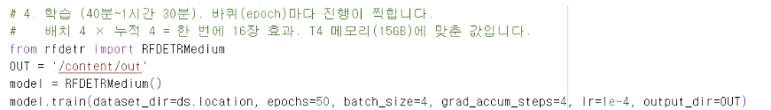

1이미 사물을 찾는 모델에서 시작
처음부터 만들지 않고 우리 사진으로 다시 학습

2사진 401장으로 학습 · 나머지 102장은 시험용으로 남겨 둠


3처음 보는 사진으로 채점
간판 위치를 상자로 찾아냄

마스킹 모델 학습 ② 학습 · 결과
너무 작아 글자로는 못 읽던 간판도
위치로 찾아냅니다
1이미 사물을 찾는 모델에서 시작
처음부터 만들지 않고 우리 사진으로 다시 학습

2사진 401장으로 학습 · 나머지 102장은 시험용으로 남겨 둠
3처음 보는 사진으로 채점
간판 위치를 상자로 찾아냄